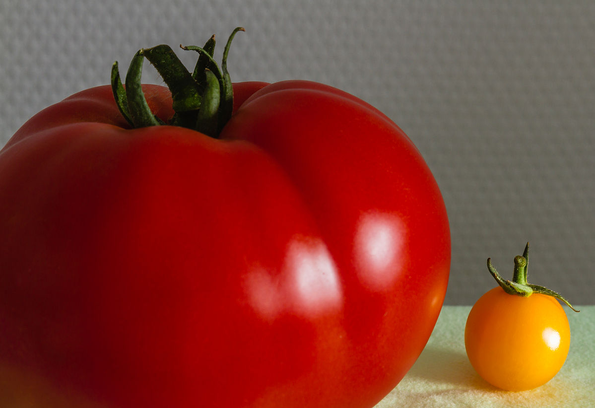

<a href="https://ja.m.wikipedia.org/wiki/%E3%83%95%E3%82%A1%E3%82%A4%E3%83%AB:2013_09_10_Tomate.jpg">Large and small tomato</a> © 2013 by <a href="https://commons.wikimedia.org/wiki/User:F._Riedelio">	Friedrich Haag</a> is licensed under <a href="https://creativecommons.org/licenses/by-sa/4.0/">CC BY-SA 4.0</a>
